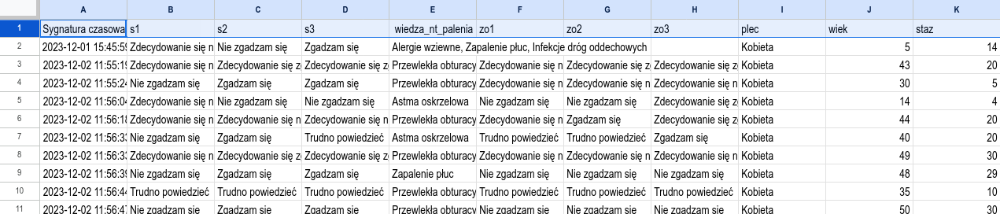

7 Łagodne wprowadzenie z Jamovi
Jak wspomniano w rozdziale 1, statystkę można uprawiać (tj. liczyć statystyki w drugim tego słowa znaczeniu :-)) wykorzystując różne programy. My zdecydowaliśmy się promować Jamovi, program który naszym zdaniem jest najlepszym – z punktu widzenia większości studentów Nauk o Zdrowiu – połączeniem ceny, możliwości, prostoty i łatwości nauki.
7.1 Podstawy pracy z Jamovi
Jamovi jest oprogramowaniem rozpowszechnianym na licencji typu Open Source, a więc można go używać za darmo. Program jest dostępny ze strony https://www.jamovi.org/download.html. Klikamy, ściągamy, uruchamiamy instalator. Program jest dość duży, ale to nie jest aż tak wielki problem w czasach kiedy pojemności dysków w domowym komputerze zaczynają się od 250 gigabajtów. Po zainstalowaniu uruchamiamy program, którego ekrano startowy wygląda jak na rysunku

Menu akcji umożliwia wykonanie podstawowych akcji:
wczytanie danych i zapisanie danych (pierwsza pozycja menu oznaczona jako trzy poziome kreski)
podgląd (w sensie skontrolowania wartości zmiennych) i modyfikację danych (pozycje Zmienne oraz Dane)
wykonanie obliczeń (pozycja Analizy)
modyfikowanie raportu (pozycja Edit)
Typowa sesja w Jamovi:
Wczytanie danych z pliku o praktycznie dowolnym formacie. Jeżeli przykładowo dane są wynikiem wykonania badania ankietowego z wykorzystaniem Formularzy Google to zalecamy posługiwanie się formatem CSV.
Transformacja danych. Przekodowanie wartości nominalnych na rangi. Przekodowanie wartości liczbowych na nominalne. Odwrócenie pytań odwróconych. Obliczenie sum/srednich rang dla wielu zmiennych.
Wykonanie obliczeń:
Analiza struktury (Eksploracja),
Analiza zależności między zmienną liczbową a nominalną (testy t/ANOVA),
Analiza zależności między zmiennymi liczbowymi: współczynnik korelacji liniowej/macierz korelacji (Regresja) 4 Analiza zależnosci między zmienną liczbową a zmiennymi liczbowymi/nominalnymi: regresja liniowa i logistyczna (Regresja)
Analiza zależności między zmiennymi nominalnymi: tablica wielodzielcza, test chi-kwadrat zgodności (Częstości)
Wykonanie obliczeń jest banalnie proste i sprowadza się do wybrania myszką odpowiednich zmiennych oraz procedury która ma być wykonana. Wynik obliczeń pojawia się natychmiast w oknie wyników. Jeżeli coś nam nie wyszło można procedurę poprawić a poprzedni wynik usunąć z okna wynikowego.
- Zapisania danych (pozycja trzy poziome kreski). Po skończeniu pracy wynik można zapisać żeby np. wysłać wykładowcy lub nie zaczynać od zera jeżeli będziemy musieli pracę kontynuuować bo wykładowca chciał żebyśmy coś poprawili.
7.2 Przykład: analiza ankiety satysfakcja–wiedza o paleniu–zamiar odejścia
Przykład nieco absurdalny, ale za to w zwartej postaci ilustrujący praktyczne sposoby transformacji danych oraz wykorzystania wszystkich procedur omawianych w podręczniku.
7.2.1 Wczytanie danych
W wyniku przeprowadzenia badania ankietowego zebrano za pomocą Formularza Google dane dotyczące satysfkacji/zamiaru odejścia oraz wiedzy nt. szkodliwości palenia tytoniu. Wyniki wyeksportowano do arkusza kalkulacyjnego, którego początek wygląda jakoś tak:
 Ankieta składa się z 10 następujących pytań:
Ankieta składa się z 10 następujących pytań:
Ogólnie rzecz biorąc nie lubię swojej pracy (kolumna B),
Ogólnie rzecz biorąc jestem zadowolony ze swojej pracy (C),
Ogólnie rzecz biorąc, lubię tu pracować (D),
Jakie według Ciebie choroby układu oddechowego mogą być spowodowane bezpośrednio przez palenie papierosów? (E),
Często poważnie rozważam odejście z obecnej pracy (F),
Zamierzam rzucić obecną pracę (G),
Zacząłem szukać innej pracy (H),
Płeć (I),
Wiek (w latach) (J),
oraz Staż pracy (K).
Ponadto Formularz Googla dodał automatycznie sygnaturę czasową
jako zawartość pierwszej kolumny (A).
Zmieniamy wartości w pierwszym wierszu, który powinien zawierać nazwy zmiennych. Nazwy zmiennych powinny być jednowyrazowe i w miarę krótkie żeby się później można nimi wygodnie posługiwać. Jednocześnie nie powinny być za krótkie żeby od razu było widać jakie dane zawiera zmienna.
Jak widać
pytania z kolumn B–C mierzą to samo (satysfakcję)
więc zmieniamy im nazwę na bardziej zwartą s1, s2 oraz s3 (s od satysfakcja).
Podobnie
ponieważ pytania z kolumn F–H też mierzą to samo (zmiar odejścia), to
też zmieniamy nazwy na coś krótszego: zo1, zo2, zo3. Kolumnę E nazywamy
wiedza_nt_palenia a kolumny I, J oraz K odpowiednio:
plec, wiek oraz staz.
Teraz arkusz wygląda jakoś tak:

Arkusz eksportujemy wybierając format CSV. Bez problemu powinniśmy
go wczytać do Jamovi (trzy poziome kreski →Otwórz)
Reasumując:
Pytania oznaczone jako
s1/s2/s3mierzą satysfakcję z pracy; pytaniazo1/zo2/zo3mierzą zamiar odejścia z pracy. Pytanias1–s3orazzo1–zo3są pytaniami jednokrotnego wyboru.Pytanie oznaczone jako
wiedza_nt_paleniamierzy wiedzę na temat palenia tytoniu. Jest to przykład wykorzystania pytania z wielokrotnym wyborem.Pytania
plec,wiek,stazmierzą płeć (kobieta/mężczyna), wiek (lata ukończone) oraz staż pracy (lata przepracowane)Pierwsza kolumna nie jest potrzebna ale jest dodawana przez aplikację Formularze Google.

7.2.2 Przekodowanie danych
Zwykle zawartość arkusza zawierającego wyniki ankiety wymaga przekodowania. W naszym przykładzie należy wykonać:
Zmienne s1–s3 oraz zo1–zo3 są mierzone w skali porządkowej. Wartości tych zmiennych chcemy zmienić (przekodować) na rangi wg schematu:
Zdecydowanie się nie zgadzam= 1;Nie zgadzam się= 2;Trudno powiedzieć= 3 itd. Dodatkowo zauważmy że s1 jest pytaniem odwróconym. W takich pytaniach należy przeliczyć rangi wg prostej formuły s1r = 6 - s1.- Miarą satysfakcji będzie suma rang s1r+s2+s3.
- Miarą zamiaru odejścia będzie suma rang zo1+zo2+zo3
Zmienna
plecjest mierzona w skali nominalnej. Nie musimy jest przekodowywaćWartość zmiennej
wiedza_nt_palenianależy przekodować na liczbę wg schematu: za wybranie poprawnej odpowiedzi plus jeden punkt; za wybranie błędnej odpowiedzi minus jeden punkt.- Miarą wiedzy nt. palenia będzy suma punktów uzyskanych za odpowiedzi prawidłowe minus suma punktów uzyskanych za odpowiedzi nieprawidłowe.
Uwaga: Sposób mierzenia wiedzy nt. palenia jest niepotrzebnie pokręcony; zamiast pytania z wielokrotnym wyborem spośród 8 możliwości/wariantów prościej jest zastosować 8 pytań Tak/Nie po czym pytania poprawne zsumować a pytania niepoprawne też dodać a wartość odjąć od sumy uzyskanej dla pytań poprawnych. My o tym wiemy, że tak jest bez sensu ale pokazujemy jako przykład przekodowania pytania z wielokrotnym wyborem.
- Wartości zmiennych
wiekorazstazsą liczbami. Mogą być analizowane tak-jak-są (regresja/korelacja) ale można też je przekodować na wartości nominalne (mały-średni-duży staż) i zastosować metody z grupy zmienna-liczbowa/zmienna nominalna (takie jak test ANOVA czy Kruskala-Wallisa)
Przekodowanie wykonujemy wybierając Dane w menu głównym.
Klikamy w nazwę zmienną, którą zamierzamy przekodować. Niech to będzie
s1. Kolumna po kliknięciu zmieni kolor.Wybieramy ikonę
Przekształcenie. Wypełniamy jak na rysunku poniżej:
Uwaga: Jamovi nie zmieni wartości zmiennej s1 tylko utworzy nową zmienną
z przekodowanymi wartościami. Zmienna na podstawie której jest tworzona
nowa zmienna nazywa się źródłową (s1 w naszym przykładzie jest źródłowa.)
Wpisujemy sensowną nazwę (na przykład s1p od przekodowana). Jak będziemy
używać sensownych nazwa łatwiej będzie nam się pracowało. Dobrze jest
też podać w opisie co zawiera zmienna.
Klikamy w pole wyboru na dole (obok napisu za pomocą przekształcenia)
Powinniśmy zobaczyć coś takiego:
Wybieramy Utwórz nowe przekształcenie. Wpisujemy sensowną nazwę
przekształcenia (na przykład Likert2R5) oraz formułę przekształcenia:
IF ($source=="Zdecydowanie się nie zgadzam", 1,
IF ($source=="Nie zgadzam się", 2,
IF ($source=="Trudno powiedzieć", 3,
IF ($source=="Zgadzam się", 4, 5))))Formuła może wydawać się przerażająca, ale jest koncepcyjnie bardzo prosta:
IF (warunek, jeżeli-prawda, jeżeli-fałsz)Warunek to fragment $source=="Zdecydowanie się nie zgadzam":
$sourceoznacza bieżącą wartość zmiennej źródłowej==to operator równości; jest więcej operatorów, które można wybrać z menu$source=="Zdecydowanie się nie zgadzam"oznacza, że jeżeli bieżącą wartością w kolumnie źródłowej jestZdecydowanie się nie zgadzamto wykonajjeżeli-prawda; w wypadku przeciwnym wykonajjeżeli-fałsz.
jeżeli-prawda to zwykle wstawienie nowej wartości;
jeżeli-fałsz to często następna formuła IF albo wstawienie innej
nowej wartości. Przykładowo jeżeli
bieżącą wartością w kolumnie źródłowej jest Zdecydowanie się nie zgadzam
to wstaw 1, jeżeli nie jest to wstaw 0:
IF ($source=="Zdecydowanie się nie zgadzam", 1,0)Ponieważ w naszym przykładzie mamy do przekodowania nie dwie a 5 wartości musimy użyć 4 warunków, które są zagnieżdżone jeden w drugim. Można powyższe przepisać, można też skopiować z podręcznika i wkleić do Jamovi.
Naciskamy Enter i gotowe. Zostaje utworzona zmienna s1p
zawierająca zamiast napisów rangi.
Jeżeli uporaliśmy się z przekodowaniem s1
ustawiamy kursor na s2 w okno danych. Naciskamy ikonę Przekształcenie.
Upewniamy się że zmienną źródłową jest s2.
Zmieniamy nazwę nowej zmiennej na s2p. Klikamy
w pole wyboru przekształcenia. Poprzednio były tam tylko dwie pozycje
Brak oraz Utwórz nowe przekształcenie teraz jest trzecia pozycja
Likert2R5 czyli przekształcenie które zdefiniowaliśmy dla zmiennej s1p.
Wybieramy Likert2R5 bo zmienną s2 chcemy przekodować dokładnie
w ten sam sposób jak s1. Po wybraniu przekształcenia w oknie danych
pojawia się nowa zmienna s2p

W podobny łatwy sposób przekodowujemy s3 oraz zo1, zo2, zo3
Uwaga: polecenie IF wpisujemy używając dużych liter. Słowo
$source wpisujemy tak jak jest to zademonstrowane ($Source jest błędem.)
Przekodowanie pytanie z możliwością wielokrotnego wyboru jest równie
proste tyle że pisania jest więcej. Zmienna wiedza_na_temat_palenia może zawierać
do ośmiu następujących napisów oddzielonych średnikami:
Przewlekła obturacyjna choroba płuc,
Astma oskrzelowa,
Alergie wziewne,
Gruźlica (B),
Zapalenie płuc (B),
Przewlekłe zapalenie oskrzeli,
Infekcje dróg oddechowych,
Palenie nie powoduje chorób układu oddechowego (B).
Odpowiedzi błędne oznaczono jako (B).
W arkuszu lub oknie danych Jamovi ta zmienna wygląda jakoś tak:
...,Przewlekła obturacyjna choroba płuc,...
...,Przewlekła obturacyjna choroba płuc;Astma oskrzelowa;Alergie wziewne;Gruźlica;Zapalenie płuc;Przewlekłe zapalenie oskrzeli,...
...,Astma oskrzelowa,
...,Astma oskrzelowa;Gruźlica;Przewlekłe zapalenie oskrzeli,...
...,Przewlekła obturacyjna choroba płuc;Astma oskrzelowa;Infekcje dróg oddechowych,...Należy zsumować wystąpienia poprawne i wystąpienia błędne. W tym celu trzeba utworzyć tyle
nowych zmiennych ile jest wariantów odpowiedzi, czyli w naszym przykładzie osiem. Każda
nowa zmienna jest przekodowywana za pomocą prostej formuły wykorzystującą funkcję CONTAINS (zawiera).
Przykładowo pierwsza (nazwijmy ją wiedz1p) powinna być utworzona w oparciu o następujące przekształcenie
CONTAINS("Przewlekła obturacyjna choroba płuc", $source)Funkcja CONTAINS wstawi 1 jeżeli $source zawiera Przewlekła obturacyjna choroba płuc.
Oczywiście następna zmienna powinna zawierać Astma oskrzelowa:
CONTAINS("Astma oskrzelowa", $source)I tak dalej aż do ostatniego wariantu odpowiedzi:
CONTAINS('Alergie wziewne', $source)
CONTAINS('Gruźlica', $source)
CONTAINS('Zapalenie płuc', $source)
CONTAINS('Przewlekłe zapalenie oskrzeli', $source)
CONTAINS('Infekcje dróg oddechowych', $source)
CONTAINS('Palenie nie powoduje chorób układu oddechowego', $source)Każda zmienna wiedza1…wiedza8 zawiera 1 jeżeli ankietowany wskazał dany wariant lub zero jeżeli
nie wskazał.
Ostatnia sprawa to przekodowanie liczb na wartości nominalne. Przykładowo chcemy podzielić ankietowanych na grupy stażowe: mały (do pięciu lat), średni (5–15 lat), duży (16 i więcej) staż pracy.
Wartości liczbowe stażu pracy zawiera zmienna staz. Aby ją przekodować
należy użyć następującego przekształcenia:
IF ($source < 5, "M",
IF ($source < 16, "S", "D"))Poleceń IF musi być o jedno mniej niż mamy klas. W naszym przykładzie zatem dwa. Jeżeli
staż jest mniejszy od 5 wstawiony zostanie napis M, jeżeli staż jest mniejszy od 16
wstawiony zostanie napis S a w przeciwnym wypadku zostanie wstawiony napis D.
Gdyby ktoś się niepokoił że 3 spełnia jednocześnie $source < 5 oraz $source < 16
to dodamy, że pierwszy się liczy. Przekształcenie kończy działanie po spełnieniu pierwszego warunku i nie
wykonuje dalszych porównań. Dlatego liczba 3 zostanie zamieniona na M a nie na S.
Podobnie przekodowujemy zmienną wiek.
7.2.3 Wyliczenie nowych zmiennych
Przekodowanie to była w zasadzie zamiana sposobu mierzenia. Wyliczenie to utworzenie
nowej zmiennej, zwykle w oparciu o jakąś formułę matematyczną. Na przykład odwrócenie pytanie s1p
realizuje s1pr = 6 - s1p. Satysfakcja to suma rang z trzech pytań:
satysfakcja = s1pr + s2p + s3p.
W celu wyliczanie nowych zmiennych należy wybrać Dane Oblicz. Pojawia sie okno
zmiennej wyliczonej zatytułowane ZMIENNA WYLICZONA
Pierwszy pasek zawiera nazwę zmienną (domyślnie nazwę kolumny w konwencji arkusza kalkulacyjnego, w przykładzie
jest to litera H) W polu definiowania zmiennej należy wpisać
stosowną formułę matematyczną. W przypadku odwracania pytania s1p będzie to:
6 - s1pW przypadku liczenia łącznej satysfakcji (przy założeniu,
że wcześniej utworzyliśmy zmienną s1pr):
SUM(s1pr, s2p, s3p)Jeżeli nie chcemy sumy ale np. średnią powinniśmy użyć
MEAN(s1pr, s2p, s3p)Inne funkcje matematyczne są dostępne po klinięciu w pole wyboru znajdujące się po lewej stronie pola definiowania zmiennej.
Powiedzieliśmy że miarą wiedzy nt. palenia będzy suma punktów uzyskanych za odpowiedzi prawidłowe minus
suma punktów uzyskanych za odpowiedzi nieprawidłowe. Odpowiedzi prawidłowe to
w1p, w2p, w3p, w6 oraz w7. Odpowiedzi błędne to w4p, w5p, w8p. Zatem
w polu definiowania zmiennej wpisujemy:
SUM(w1p, w2p, w3p, w6, w7) - SUM(w4p, w5p, w8p)7.2.4 Analiza struktury
Wybieramy Analizy→Eksploracja→Statystyki opisowe.
W wyświetlonym oknie po lewej deklarujemy co ma być liczone. Wynik pojawi się po prawej (por rysunek)
Ustawiamy kursor na zmiennej która nas interesuje i klikamy w strzałkę górną.
Jeżeli chcemy podzielić wartości zmiennej na grupy według jakiejś
zmiennej nominalnej, to ustawiamy kursor na tej zmiennej nominalnej
(na przykład plec) i klikamy strzałkę dolną.
Można analizować wiele zmiennych na raz. Wystarczy w tym celu ustawić kursor na zmiennej i kliknąć w odpowiednią strzałkę. Zawartość okna wynikowego zostanie automagicznie uaktualniona.
Poniżej okien wyboru zmiennych są zakładki określające
precyzyjnie co ma być obliczone oraz jakie wykresy mają
zostać wyrysowane. Przykładowo domyślny wydruk nie zawiera
rozstępu kwartylowego. Żeby go dodać do wyniku należy
w zakładce Statystyki zaznaczyć przycisk IQR.
7.2.5 Analiza zależności: zmienne nominalne
Wybieramy Analizy→Częstości→Próby niezależne.
Podobnie jak w przypadku analizy struktury jest wyświetlana
lista zmiennych oraz okna i strzałki pozwalające
wygodnie wybrać to co ma być analizowane. Jest to tak proste
że wystarczy przyjrzeć się przykładowemu rysunkowi żeby
wiedzieć jak postępować. Przykładową analizę zależności
pomiędzy zmiennymi nominalnymi zamiarOklasa oraz staz.klasa przedstawia rysunek.
7.2.6 Analiza zależności: zmienna liczbowa/zmienna nominalna
Wybieramy Analizy→Testy t→Test t dla prób niezależnych i/lub
Analizy→ANOVA→Jednoczynnikowa ANOVA.
Zostanie wyświetlony znajomy interfejs. Wybieramy co trzeba. Wynik automagicznie pojawia się w lewym oknie.
7.2.7 Analiza zależności: zmienna liczbowa/zmienna liczbowa lub nominalna
Wybieramy Analizy→Regresja→Regresja liniowa
Interfejs podobny do poprzednio opisywanych. Wybieramy zmienną zależną (musi oczywiście być liczbowa) klikając w górną strzłkę. Zmienne niezależne mierzone w skali liczbowej klikając w środkową strzałkę. Zmienne niezależne mierzone w skali nominalnej klikając w dolną strzałkę. Wynik automagicznie pojawia się w lewym oknie.
7.2.8 Regresja logistyczna
Wybieramy Analizy→Regresja→Regresja logistyczna→Dwie wartości
Interfejs podobny do analizy regresji. Wybieramy zmienną zależną klikając w górną strzłkę. Zmienna ta musi być zmienną dwuwartościową.
Zmienne niezależne mierzone w skali liczbowej wybieramy klikając w środkową strzałkę a zmienne niezależne mierzone w skali nominalnej klikając w dolną strzałkę.